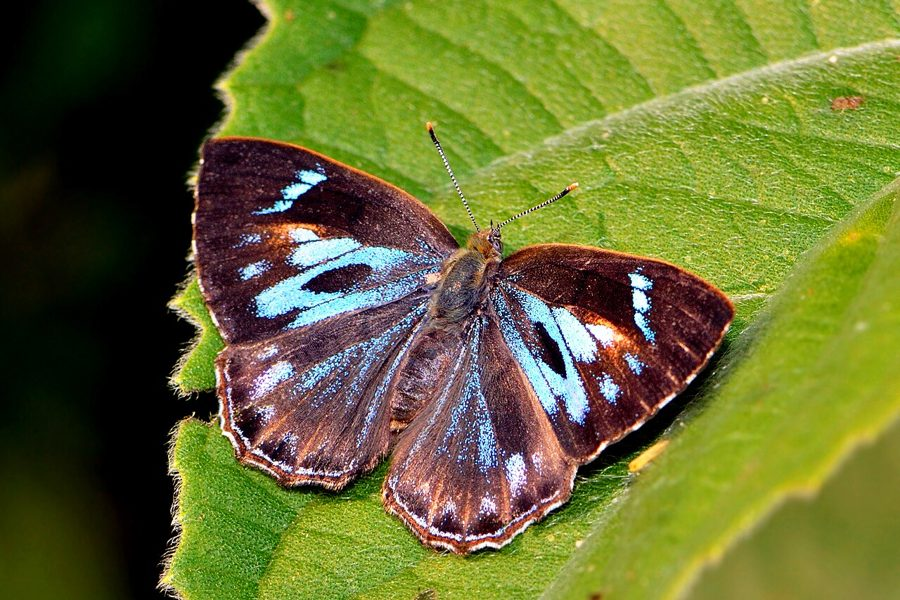

कॉमन जेमCommon Gem
Poritia hewitsoni · Lycaenidae · INS-0257

- Scientific name वैज्ञानिक नाम
- Poritia hewitsoni Moore, 1865
- Family कुल
- Lycaenidae
- Hindi हिंदी
- कॉमन जेम
- Local names स्थानीय नाम
- hewitson gem, samanya gem titli, common gem
- Status here यहाँ की स्थिति
- native
- Movement आवागमन
- Resident, here all year
- Known from कहाँ दर्ज
- Others have published records from the wider Awadh–Purvanchal plain, none yet from Basti–Ayodhya अवध–पूर्वांचल से दूसरों के प्रकाशित अभिलेख, बस्ती–अयोध्या से अभी नहीं
- IUCN IUCN
- not evaluated
- Review समीक्षा
- not yet reviewed
When to look कब देखें
Expected mainly in March, April, May, June, July, August, September, October. मुख्यतः मार्च, अप्रैल, मई, जून, जुलाई, अगस्त, सितंबर, अक्टूबर में अपेक्षित।
Tell it apart from इनसे अलग पहचानें
कॉमन जेम / Common Gem
Poritia hewitsoni Moore, 1865 — Lycaenidae
कॉमन जेम — तराई और नम पर्णपाती वनों के ऊंचे वितान (कैनोपी) में पाई जाने वाली एक छोटी रत्न जैसी तितली। इसके नर के पंखों पर गहरा मखमली कालापन और चमकदार फिरोज़ी-नीले धब्बे होते हैं, जबकि पंखों के नीचे लाल-भूरी लहरदार नक्काशी बनी होती है। यह तितली पेड़ों की सबसे ऊंची शाखाओं में उड़ती है और इसकी इल्लियां पेड़ों की छाल पर उगने वाले लाइकेन और काई को खाती हैं।
Quick Identification त्वरित पहचान
| Feature | Description |
|---|---|
| Wingspan | Small among Indian lycaenid butterflies |
| Upperside ground colour | Velvety blackish-brown with iridescent blue markings |
| Upperside markings | Brilliant turquoise to electric blue patches in male |
| Underside ground colour | Creamy ochraceous to pale buff |
| Underside pattern | Intricate sinuous reddish-brown transverse bands |
| Wing margin | Tornus rounded, lacking long filamentous tails |
| Resting posture | Wings held tightly folded upright, mimicking mottled tree bark |
Field tip: Scan sunlit upper foliage of tall forest trees along wooded ravines in early autumn using binoculars. A small butterfly showing flashes of electric blue in brief canopy dogfights and resting with intricately marbled red-brown undersides is the Common Gem.
हिंदी — कैसे पहचानें: ऊंचे पेड़ों की चोटियों पर उड़ने वाली छोटी तितली। उड़ते समय फिरोज़ी-नीले रंग की चमक और बैठते समय पंखों के नीचे लाल-भूरी लहरदार जालीदार बनावट इसकी पहचान है।
Morphology आकारिकी
Sexual dimorphism is pronounced in the Common Gem. While the male boasts iridescent cerulean or turquoise-blue patches across the disc of the forewing and costal area of the hindwing, the female is much duller, with the blue replaced by pale ochre-yellow or light greyish-blue scaling.
The underside ornamentation is highly characteristic of the subfamily Poritiinae: both wings are washed in pale buff or creamy yellow, completely covered with dense, wavy, narrow transverse reddish-brown bands that fuse and separate in an irregular marbled tapestry. There are no tails on the hindwing tornus.
The wings possess distinct venational features that distinguish the Poritiinae from other lycaenid subfamilies. The forewing has eleven veins, and the discal cell is short and closed. The resting posture keeps the wings tightly appressed over the thorax, exposing only the marbled, bark-like lower surface.
हिंदी: नर तितली के पंखों पर गहरा काला रंग और चमकीले फिरोज़ी धब्बे होते हैं, जबकि मादा में यह रंग फीका और बादामी होता है। पंखों का निचला हिस्सा मटमैला पीला होता है जिस पर लाल-भूरी टेढ़ी-मेढ़ी लकीरें बनी होती हैं।
Behaviour & Ecology व्यवहार और पारिस्थितिकी
Poritia hewitsoni is an elusive butterfly that spends much of its life high in the tree canopy of moist forest tracts. Males are fiercely territorial and perch on high sunlit leaves of emergent trees.
They engage in lightning-fast aerial dogfights with rival males, spiralling upwards in sunbeams before returning to their preferred perches. Females are less conspicuous and spend considerable time searching for oviposition sites on mossy branches and shaded tree trunks.
Adults occasionally descend to the forest floor or damp boulders along streams during hot, dry weather to imbibe moisture, but they are most often observed flitting about canopy tops in short, rapid flights.
During midday heat, adults seek shelter on the undersides of horizontal leaves deep within the forest canopy, avoiding exposure to wind and direct solar radiation.
हिंदी: यह तितली अपना अधिकांश समय ऊंचे पेड़ों की शाखाओं पर बिताती है। नर तितलियां धूप वाली पत्तियों पर बैठकर दूसरे नरों से मुकाबला करती हैं। दोपहर की तेज धूप में यह घने पत्तों के नीचे छिप जाती है।
Life Cycle / Phenology जीवन चक्र
Singh (2003) gave the first account of the early stages, from sal forest in the Dehra Dun valley. Fourth- and fifth-instar larvae fed in groups, many together in a row along one leaf, half above the leaf surface and half below it, so that the group looks like a single mass.
The pupae were pale, with a line of black spots along each margin, and were found attached to the upper surface of young sal leaves and to the leaves of the climber Millettia auriculata (Singh 2003).
In the same study adults were recorded from spring to autumn, most abundantly in July and August, when the species also breeds (Singh 2003).
हिंदी: इसकी इल्लियां झुंड में रहती हैं; एक ही पत्ती पर बहुत सी इल्लियां एक कतार में साथ-साथ खाती पाई गई हैं। प्यूपा साल की नई पत्तियों और एक बेल की पत्तियों पर चिपका मिला है। बरसात के महीनों में यह तितली सबसे ज्यादा दिखती है और तभी इसका प्रजनन होता है।
Host Plants or Prey आहार
Singh (2003) recorded fourth- and fifth-instar larvae feeding on the tender and mature leaves of Sal (Shorea robusta) and sain (Terminalia tomentosa) in the rainy season, the first food plants recorded for the species.
Adults were seen taking nectar at flowering Syzygium operculatum trees beside a forest stream (Singh 2003).
हिंदी: इसकी इल्लियां साल और साईं (असना) के पेड़ों की कोमल और पुरानी पत्तियां खाती हैं। वयस्क तितलियां जंगल में नालों के किनारे फूले पेड़ों का रस पीती हैं।
Predators / Natural Enemies शत्रु
Singh (2003) recorded adults being taken by spiders. No other enemy is recorded for the species; insectivorous birds, mantises and parasitoid wasps take small lycaenids generally.
हिंदी: मकड़ियां इस तितली का शिकार करती दर्ज की गई हैं। इसके अलावा कीड़े खाने वाली चिड़ियां और मेंटिस भी छोटी तितलियों को पकड़ते हैं।
Agricultural / Human Relevance कृषि प्रासंगिकता
This species has no negative agricultural footprint. It does not attack cultivated crops or orchard species.
Its known food plants are forest trees, sal above all, so in the plains it depends on surviving sal and mixed deciduous woodland.
Forest conservation initiatives that maintain tall canopy trees and protect natural riverine corridors directly ensure the survival of its breeding colonies.
हिंदी: यह तितली फसलों को कोई नुकसान नहीं पहुंचाती। यह पुराने और घने जंगलों की अच्छी सेहत का संकेत देती है। साल और मिले-जुले पर्णपाती जंगलों को बचाए रखने से इसकी प्रजाति सुरक्षित रहती है।
Expected Locally स्थानीय रूप से अपेक्षित
Not a field record. Written from published accounts for eastern Uttar Pradesh. No confirmed local sighting yet — if you have seen it, that is what the atlas needs.
अभी तक स्थानीय पुष्टि नहीं। यह विवरण प्रकाशित स्रोतों से है, किसी अवलोकन से नहीं।
GBIF holds published records from the wider Awadh–Purvanchal plain, none yet from Basti–Ayodhya. In eastern Uttar Pradesh, Poritia hewitsoni is expected as an occasional canopy inhabitant in northern terai forest tracts and mature riverine tree corridors. A confirmed first record requires a clear photograph with place and date submitted through the project portal.
हिंदी: अवध के तराई वाले जंगलों और नदी किनारे के पुराने पेड़ों की चोटियों पर यह तितली संभावित है। पुष्टि के लिए दूरबीन से देखी गई इस तितली की साफ तस्वीर तारीख सहित भेजें।
Distribution वितरण
Global range: Sub-Himalayan belt from Himachal Pradesh and Uttarakhand through Nepal and northern India to Myanmar.
In India: Recorded along the Himalayan foothills and adjoining northern moist forest tracts (Varshney & Smetacek 2015).
In Uttar Pradesh: Documented from northern terai woodlands and moist forest canopies.
In Basti district / eastern UP: Expected as a rare canopy visitor along northern riverine tree corridors.
हिंदी: यह तितली हिमालय की तलहटी में हिमाचल से लेकर असम और म्यांमार तक पाई जाती है। उत्तर प्रदेश में यह तराई के घने वनों में मुख्य रूप से देखी जाती है।
Research Questions शोध प्रश्न
- Does Poritia hewitsoni depend strictly on moist terai woodlands in Uttar Pradesh, or does it utilize mixed deciduous canopies in the plains?
- Does the caterpillar use sal and Terminalia in Awadh, as in the Dehra Dun valley, or other trees as well?
- How does canopy fragmentation affect genetic connectivity among isolated terai populations?
- Are the gregarious larvae attended by ants, as many lycaenid larvae are?
- क्या तराई के वनों के बाहर यह तितली अवध के मैदानी भागों में जीवित रह सकती है?
- क्या अवध में इसकी इल्लियां साल के अलावा दूसरे पेड़ों पर भी पलती हैं?
Similar Species मिलती-जुलती प्रजातियाँ
| Species | How to tell apart | हिंदी | |
|---|---|---|---|
| [[dark_cerulean\ | Jamides bochus]] | Possesses long slender tails on hindwing and distinct transverse white lines below | पिछले पंख पर पतली पूंछ और नीचे सफेद रेखाएं, लाल-भूरी लहरदार पट्टियों का अभाव |
| [[silverstreak_blue\ | Iraota timoleon]] | Much larger, with a prominent jagged silver-white streak on the underside | काफी बड़ा आकार और पंख के नीचे चौड़ी चमकीली चांदी जैसी लकीर |
| [[large_oakblue\ | Arhopala amantes]] | Substantially larger with dark chocolate-brown underside and metallic blue-green tornal spot | काफी बड़ा आकार, गहरा कत्थई निचला भाग और हरे रंग का निचला कोना |
Field rule: Notice the small size, sudden flashes of brilliant turquoise in high tree perches, and the intricate red-brown marbled underside without tails.
हिंदी: छोटा आकार, बिना पूंछ वाला पंख और पंखों के नीचे लाल-भूरी लहरदार जालीदार नक्काशी इस तितली को अन्य नीली तितलियों से अलग करती है।
Taxonomy & Classification वर्गीकरण
Original description. Poritia hewitsoni was described by Frederic Moore in 1866 in his paper "On the lepidopterous insects of Bengal" (Proceedings of the Zoological Society of London, 1865(3), p. 775).
Subspecies. Subspecies Poritia hewitsoni hewitsoni is recognized from the north-western Himalayas and adjacent northern plains.
Family and order placement. Belongs to the subfamily Poritiinae, a distinctive lineage of the Lycaenidae whose caterpillars have unusual dietary habits and unique wing venation.
IUCN status rationale. Not evaluated globally by the IUCN Red List. It is a localized forest canopy species without immediate extinction threats.
हिंदी: इस तितली का वैज्ञानिक विवरण 1866 में फ्रेडरिक मूर द्वारा प्रकाशित किया गया था। यह लाइकेनिडे कुल के पोलिटिइनी उपकुल की सदस्य है।
Photo Gallery फोटो गैलरी
No photos yet — add field photos to media/species/common_gem/ and run node scripts/sync_photos.js.
Photos needed आवश्यक फोटो
- [ ] Basking adult showing brilliant turquoise upperside patches (फिरोज़ी-नीले धब्बे फैलाए तितली)
- [ ] Underside view displaying intricate red-brown marbling (पंखों के नीचे की लाल-भूरी जालीदार बनावट)
- [ ] Canopy perching posture on sunlit leaves (पेड़ की ऊंची डाल पर बैठी तितली)
References संदर्भ
- Moore, F. (1865). On the lepidopterous insects of Bengal. Proceedings of the Zoological Society of London, 1865(3): 755–823.
- Wynter-Blyth, M. A. (1957). Butterflies of the Indian Region. Bombay Natural History Society, Bombay.
- Kehimkar, I. (2008). The Book of Indian Butterflies. Bombay Natural History Society, Oxford University Press, Mumbai.
- Varshney, R. K. & Smetacek, P. (2015). A Synoptic Catalogue of the Butterflies of India. Butterfly Research Centre, Bhimtal.
- Singh, A. P. (2003). New records on the distribution and ecology of Common Gem butterfly, Poritia hewitsoni hewitsoni Moore from the lower western Himalayas: a lesser known taxa. Journal of the Lepidopterists' Society, 57(4): 295–298.
- GBIF Occurrence Data — Poritia hewitsoni, India (2025).
Source file: species/fauna/insects/common_gem.md